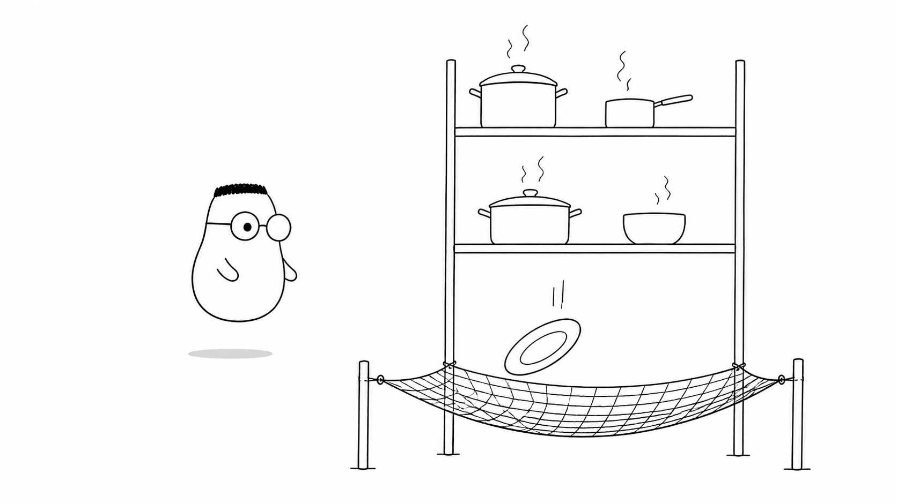
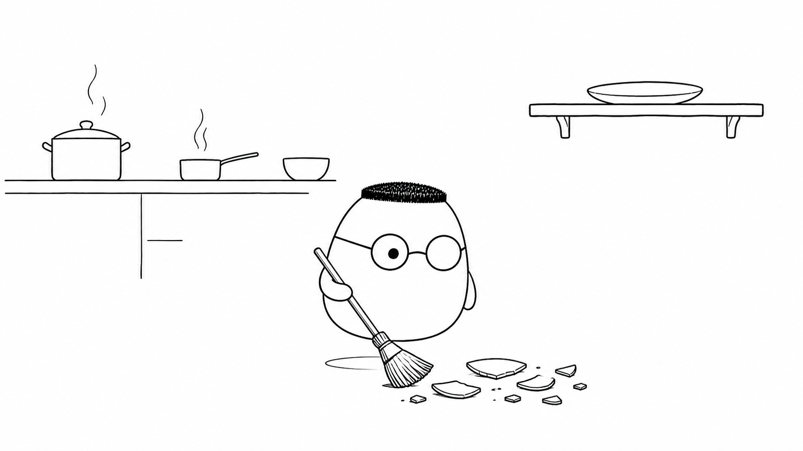
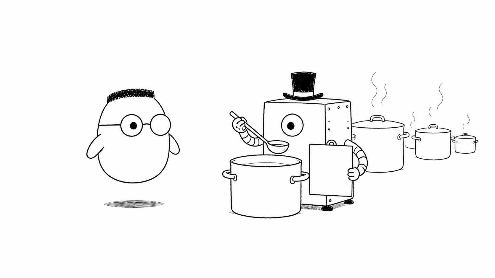

Masalah sehari-hari
Restoran melayani banyak tamu, bahan, dan pesanan. Sesekali pesanan gagal, pemasok tidak menjawab, atau dapur kehabisan satu bahan. error tidak selalu bisa dicegah. Yang bisa disiapkan adalah reaksi yang jelas.
Sistem tahan gagal membuat masalah cepat terlihat. Ia mencatat kejadian, memberi pesan yang aman, lalu mencari jalan untuk pulih. Tamu tidak perlu ikut melihat kepanikan di belakang pintu.
Analogi Kuka
Dapur adalah sistem yang sibuk. Tamu mengirim pesanan. Juru masak mengolahnya. Kasir mengirim kabar bahwa pesanan sudah siap. Setiap bagian punya tugas, tetapi kegagalan di satu bagian dapat mengganggu bagian lain.
Jaring pengaman dipasang di bawah rak piring. Saat piring jatuh, jaring menangkapnya sebelum pecah di lantai. Pesan untuk tamu tetap singkat. Catatan untuk dapur menyimpan detail yang dibutuhkan untuk memperbaiki masalah.
Peta istilah dapur
Pesanan adalah request. Kabar masalah adalah error. Juru masak yang mengatur respons adalah handler. Buku harian dapur adalah log. Pemeriksaan panci berkala adalah health check. Jaring pengaman terakhir adalah global error handler.
Ilustrasi

Jaring tidak menghapus kemungkinan piring jatuh. Ia mencegah satu kejadian kecil berubah menjadi lantai berbahaya dan layanan yang berhenti. Sistem backend juga perlu lapisan pengaman seperti itu.
Penjelasan konsep
Logic error adalah kesalahan aturan di dalam program. Program tetap berjalan, tetapi hasilnya salah. Rasa masakan bisa terlalu asin tanpa mengeluarkan suara apa pun. Karena itu logic error perlu dicari lewat contoh, pengujian, dan pengamatan hasil.
Error database
Database bisa lambat, terkunci, atau tidak tersedia. Backend sebaiknya mencatat error itu, membatasi percobaan ulang, dan memberi tahu tamu bahwa pesanan belum dapat diproses. Jangan menganggap gudang selalu terbuka.
Error layanan eksternal
Layanan eksternal seperti pembayaran atau pengiriman dapat timeout. Beri batas waktu yang masuk akal. Coba lagi hanya jika aman. Jika tetap gagal, simpan keadaan pesanan dan berikan pesan yang bisa dipahami tamu.
Error validasi input
Input yang kosong, salah bentuk, atau tidak masuk akal harus ditolak di awal. Ini kesalahan request, bukan kerusakan dapur. Balas dengan status code 400 dan alasan yang membantu tamu memperbaiki pesanan.
Error konfigurasi
Konfigurasi adalah resep yang dipakai semua bagian aplikasi. Nama host yang salah, secret yang hilang, atau nilai yang tertukar dapat membuat seluruh dapur gagal. Periksa konfigurasi saat aplikasi mulai berjalan.

Health check adalah pemeriksaan singkat sebelum tamu mengeluh. Manajer memeriksa apakah aplikasi hidup, database bisa dijangkau, dan bagian penting masih siap menerima pesanan.

Monitoring dan observabilitas
Monitoring mengawasi tanda penting seperti jumlah error, waktu respons, dan penggunaan sumber daya. Observabilitas membantu kita mencari sebab dari tanda itu lewat log, metrik, dan jejak request. Baca buku harian dapur sebelum tamu datang membawa keluhan.
Strategi pemulihan menentukan langkah setelah gagal. Juru masak kedua dapat mengambil alih panci. Sistem dapat mencoba lagi, memakai jalur cadangan, menunda pekerjaan, atau membatalkan perubahan. Pilih langkah yang tidak menggandakan pesanan.
Global error handler adalah jaring pengaman terakhir. Ia menangkap error yang lolos dari bagian lain, mencatat detailnya, dan mengirim respons yang rapi. Handler ini mencegah aplikasi membocorkan halaman rusak atau detail internal kepada tamu.
Keamanan yang diekspos
Kepada tamu, cukup kirim pesan seperti pesanan gagal dan nomor laporan. Jangan kirim stack trace, nama tabel, alamat server, token, atau secret. Detail lengkap hanya masuk ke catatan internal yang aksesnya dibatasi.
Diagram alur
Request yang bermasalah melempar error. Error dicatat di buku harian. Global error handler menangkapnya. Tamu mendapat status 400 atau 500 dengan pesan rapi, sedangkan dapur mendapat detail untuk memperbaiki masalah.
Contoh mini
Kartu pos: Validasi gagal -> 400 Alasan: email tidak sah Tamu: perbaiki input Dapur gagal -> 500 Tamu: pesanan gagal Detail dalam: tidak dikirim
Kegagalan validasi menjelaskan apa yang perlu diperbaiki. Kegagalan dapur memberi pesan umum agar detail internal tetap aman. Keduanya tetap dicatat supaya tim dapat melihat pola masalah.
Ringkasan
- Error pasti muncul. Rancang sistem untuk gagal secara terkendali dan pulih dengan jelas.
- Logic error dapat memberi hasil salah tanpa membuat aplikasi berhenti.
- Error database dan layanan eksternal perlu batas waktu, pencatatan, dan pemulihan yang aman.
- Input buruk ditolak dengan status 400 dan alasan yang membantu.
- Konfigurasi diperiksa sejak awal. Health check mencari masalah sebelum tamu mengeluh.
- Monitoring dan observabilitas menghubungkan gejala dengan penyebab.
- Strategi pemulihan dapat mencoba lagi, memakai jalur lain, menunda, atau membatalkan pekerjaan.
- Global error handler memberi pesan aman kepada tamu dan detail berguna kepada dapur.
Pertanyaan pemahaman
- Kenapa error harus segera ketahuan, bukan disembunyikan?
- Apa beda pesan untuk tamu dan pesan untuk dapur saat pesanan gagal?
- Apa fungsi jaring pengaman (global error handler)?
Mau lebih dalam
Versi teknis menunjukkan cara menerapkan error handling, mencatat kegagalan, dan membangun sistem yang tetap bisa melayani saat sebagian komponennya bermasalah.